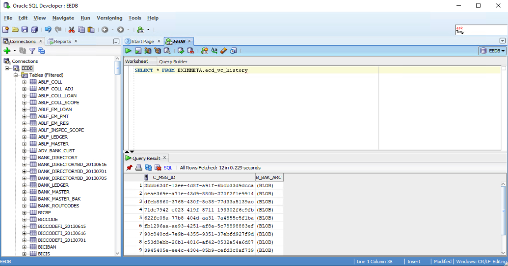
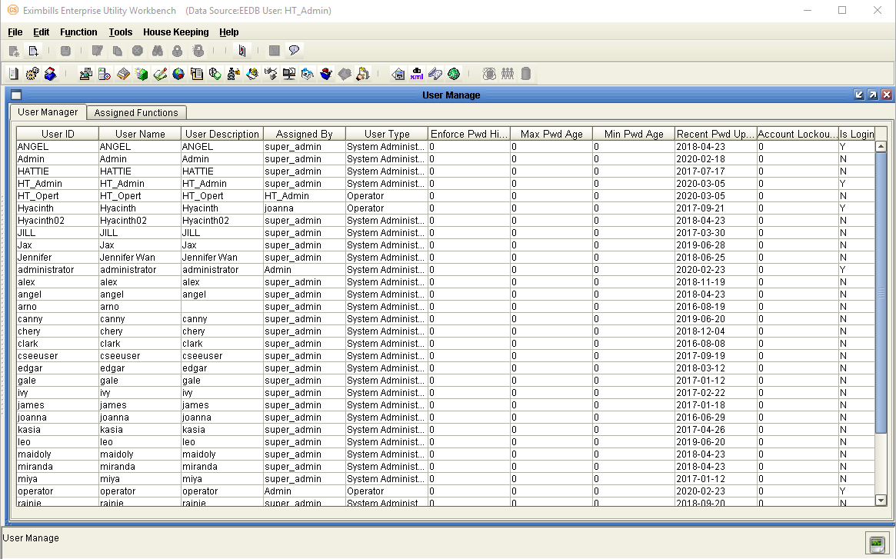

EEV415 User Manager Functions MMD
Table of Contents
EE Documentation Library 5
Preparing the EE Utility Files 16
Navigating the EE Utility Interface 22
Generating the XML Parameter Files 55
The User Manage Function Group 78
Exporting Logs to an Excel File 109
Viewing DB Dictionary Log Details 112
Assigning Functions to Users 121
EE Documentation Library [ee-documentation-library]
EE Documentation Library [ee-documentation-library-1]
The EE Documentation Library lists all available manuals that serve as references on the use of the EE system. The documents are categorized into three groups: Core System Manuals, EE Utility References, and Installation Guides.
Core System Manuals [core-system-manuals]
The EE Core System manuals provide information on the setup and configuration of various EE parameters, as well as the implementation of supplementary functionalities supported by the system.
Archiving and Recovery
This manual is a reference to the Archive and Recovery functionality of the EE system. Discussions include the required parameter settings for configuring the relevant functions, as well as examples of how this functionality is used in transaction processes. The archiving functions discussed in this manual are Archive Data, Inquire Archived Data, Restore Archived Data, Delete Archived Data, and End of Month functions.
BIRT Report Engine
This manual discusses the requirements and processes involved in applying the built-in BIRT report engine of EE to build transaction functions that generate BIRT reports and documents. Other functionalities, such as configuring a report batch function and defining rules to attach documents to an outgoing e-mail, are covered as well.
Building a Module
This manual is designed to help new users of EE plan, organize, control, and successfully carry out the implementation of the system. It provides a general description of the different features of EE that enable every bank to build and design business modules according to its processing requirements. This manual discusses how a custom business module in EE can be built and adapted. It includes step-by-step procedures on how to build a module as well as an overview of runtime transaction processing.
Charges and Commissions Reference
This document provides extensive discussions on the setup and usage of the Charges and Commissions component of EE. Instructions include setting up parameters, defining the relevant standing data, and using charge-specific calculation methods.
Data Objects
This manual describes in detail the steps and procedures required in building and utilizing a data object, which is a logical object that has its own attributes and calculation rules. Instructions on customizing the DO screen interface, navigating the data object screen, and using data objects in transaction processes are also provided.
eLOAN Transaction Module
This document provides extensive discussions on EE’s eLOAN sub-system. Topics include eLOAN functions from the eLOAN Transaction Module and the EE Standing Data Module.
FAQs
This document addresses commonly asked questions about the EE system. This includes answers to issues related to browser-side processing, EE Utility, EE database, Security Manager, and other issues that may arise while operating and configuring settings within the EE environment. Some system features and capabilities are discussed as well.
GAPI Integration
This manual is a comprehensive reference guide on setting up the required parameters for sending and receiving GAPI messages. It includes instructions on the configuration of related functionalities and auxiliary operations, as well as discussions on actual transaction processing.
Limit Management Module
This document provides extensive discussions on the Limits sub-system of EE. The manual is divided into two parts:
-
The first part discusses all the browser functions of the Limit Management module.
-
The second part discusses the required parameter settings to integrate Limits settings and data with a business module.
Limit Transaction Module
This document provides extensive discussions on running and using the functions of the Limit Transaction module.
Log Settings
This manual provides instructions on defining EE log settings and configuring parameters to set up log functions. Generating logs on different modes and checking the different log directories are discussed as well.
Multi-Entity Reference
This manual is a guide to the multi-entity structure of the EE system. This includes a discussion on the composition of the system in relation to this structure. EE also supports the use of a single and default domain; a supplementary section is provided for this.
Multi-Language Reference
This manual provides instructions on defining language records and configuring the multi-language settings in the EE Utility and EE browser. With this multi-language functionality, users are able to access the EE system in their preferred language.
Payment Component Reference
This document provides extensive discussions on the setup and usage of the different Payment component types: Payment Terms, Payment Schedule, Payment Instruction Dealer, and Payment Dealer. Topics include parameter settings and Payment-specific calculation methods.
Security Manager
This manual is a comprehensive guide to security management in the EE system. As such, it includes instructions on the setup of user profiles, user functions, business units, business unit functions, user and business unit assignments, and other security-related operations.
Service Level Agreement Reference
This document is a reference to the Service Level Agreement (SLA) functionality of EE the system, which pertains to a group of settings that control the flow of transaction steps and processes. It is divided into two major sections: Basic Data, for the functions used in the creation and maintenance of SLA standing data; and System Operations, for the functions used in SLA enquiry, business task initialization, and end time adjustments. A sample SLA process is also provided.
Standing Data Module
This document discusses the functions for the standing data of the EE system. Among these are rate descriptions, exchange rates, interest rates, account numbers, currencies, weekend data, holiday data, clauses, reference number rules, authorization standing data, and time zone data. Descriptions, input details, and processing steps are included in the function discussions.
Supplementary Functions
This manual is a reference in configuring the parameter settings to define special or supplementary EE functionalities such as the Compliance Check and invoice uploading features.
SWIFT Configuration
This document provides extensive discussions on the primary components required in defining SWIFT messages: the SWIFT template and the SWIFT message rule. The complete parameter settings and external configurations required for enabling EE to exchange messages with the SWIFT network are detailed in comprehensive procedures. This manual is supplemented with sections on SWIFT-related system parameters and miscellaneous functions.
System Administration Functions
This manual is a reference for Super Administrator users of the EE Utility in the configuration and maintenance of the EE environment. Sections of this reference include instructions on the use of specific User Manage and Parameter Manage functions.
System Maintenance Module
This document discusses the functions provided in the System Maintenance module of the EE system. This includes sections on the maintenance processes for daily operations, authorization rule settings, EDI messages, SWIFT messages, XML messages, log files, and documents.
System Reference
This manual is a reference for the following elements provided in the EE Utility for parameterization: security parameters, system parameters, components, server side system methods, calculation methods, and XML Generator items.
Version Control
This manual discusses the settings in maintaining the different versions of parameters.
[section]
EE Utility References [ee-utility-references]
The EE Utility set of reference manuals is a guide on the use of the EE Utility Workbench, or simply EE Utility. These references discuss every function or feature of the EE Utility and provide instructions on how to operate or use the function in relation to operating and maintaining the EE system and processing a business transaction.
A manual is provided for each major function group of the EE Utility: User Manage, Parameter Manage, System Function, Transaction Function, and Maintenance.
NOTE: The TSU Parameter Manage function group is comprised of functions used for configuring, managing and maintaining parameters for the TSU (or Open Account) module. For information on the TSU module, refer to the EE Baseline TSU documentation.
EE Utility Reference: User Manager Functions
This manual is a comprehensive guide for the Administrator and Operator user on the use and configuration of the functions belonging to the User Manage function group of the EE Utility. This includes functions for user profiles and audit logs.
EE Utility Reference: Parameter Manager Functions
This manual is a reference on the use and configuration of the functions that belong to the Parameter Manage function group of the EE Utility and that are accessible to Administrator and Operator users. These are system-wide functions used for creating and maintaining system parameters, components, and calculation rules, among others.
EE Utility Reference: System Functions
This manual includes information on the configuration of the functions belonging to the System Function group of the EE Utility. The functions in this group are used to maintain settings that facilitate system-wide tasks and operations; among these are function groups, output devices, protocol managers, and STP settings.
EE Utility Reference: Transaction Functions
This manual provides discussions on the configuration of the functions belonging to the Transaction Function group of the EE Utility. These functions are used for defining and setting up the actual business parameters of transaction functions.
EE Utility Reference: Maintenance Functions
This manual is a comprehensive guide on the use and configuration of the functions belonging to the Maintenance function group of the EE Utility. These functions are used for maintaining the tables, fields, and files that are used in the EE Utility.
Installation Guide [installation-guide]
An EE installation guide is a reference on the installation and setup processes of the EE system on a specific application server and database.
Installation Guide WAS 9.0 - Oracle 12c
This is a reference for installing the EE system on WebSphere Application Server Version 9.0.5.5, with an Oracle 12c database. This includes detailed instructions on configuring the components that are required to successfully run EE.
Introduction [introduction]
-
SYSTEM OVERVIEW
-
MANUAL OVERVIEW
System Overview [system-overview]
The Eximbills Enterprise Utility Workbench, or EE Utility, is the main parameter-setting tool of the Eximbills Enterprise (EE) system. It is used to define the parameters and rules that are required to carry out business operations and system tasks in EE. These parameters and rules instruct the system on how to control, manage, and process the business data that it receives. Using the EE Utility, parameters may be customized according to specific business requirements.
The EE Utility is managed by three types of users: Super Administrator, Administrator, and Operator. System administration tasks, such as configuring business units, defining data sources, and setting security parameters may be performed only by the Super Administrator users. Administrator and Operator users, on the other hand, manage and process transaction functions and the actual data that the business unit manages. Additionally, Super Administrator users may create Administrator and other Super Administrator users, while Administrator users may create Operator and other Administrator users.
For easier navigation, the functions in the EE Utility are organized into the following function groups:
-
User Manage – Functions belonging to this group are used to define the business units, data source settings, user profiles, and function assignments of each user.
-
Parameter Manage – Functions belonging to this group are used to create and maintain system-wide transaction parameters.
-
System Function – Functions belonging to this group are used to maintain and facilitate system-wide tasks.
-
Transaction Function – Functions belonging to this group are used to define the actual business parameters of transaction functions.
-
Maintenance Function – Functions belonging to this group are used to maintain the tables, fields, and files that are used in the EE Utility.
The User Manage function group, which is discussed in this reference, is accessible only to Super Administrator and Administrator users with the appropriate function access rights.
NOTE:
i. When the logon profile that is used to log on the EE Utility is a Super Administrator profile, the Security data source and its corresponding security functions are accessed. If the logged on user is an administrator or operator, the data source that is being accessed is the Meta data source.
ii. The settings that are defined by a super administrator in the EE Utility define certain scopes and limitations of parameters that apply in the browser side of the EE system.
[section-1]
Manual Overview [manual-overview]
Purpose
This manual is a comprehensive guide for the Administrator and Operator user on the use and configuration of the functions that belong to the User Manage function group of the EE Utility and are accessible to Administrator and Operator users. This includes functions for user profiles and audit logs.
The use of each of these functions is described in separate sections of this manual. Discussions include the required information, settings, and steps to operate these functions.
Audience
This document is written specifically for, but not limited to, the following users:
- Consultants tasked with maintaining Administrator and Operator user profiles and audit logs
Prerequisites
Sufficient knowledge of the system is required including building basic parameters.
Suggested titles before reading this manual:
-
EE Building a Module
-
EE Installation Guide
NOTE: Some features discussed in this manual have been tested and documented based on an older system version. Unless otherwise specified, the overall functionality is the same when recreated in the current version.
Using the EE Utility [using-the-ee-utility]
-
Running the EE Utility
-
Generating the XML Parameter Files
-
Building an EE Module
-
Running the EE Utility [running-the-ee-utility]
The Eximbills Enterprise Utility Workbench, or EE Utility, is the main tool for building parameters in EE.
Preparing the EE Utility Files [preparing-the-ee-utility-files]
Along with the installation files, the EE Utility folder is provided with every EE system release.
Prior to using the EE Utility, do the following:
-
Copy the EE Utility folder to the local drive.
-
Edit the CSUtility.bat file in the EE Utility folder, define the \BIN path of the JDK program.
**EXAMPLE:
**path = C:\Program Files\Java\jdk1.8.0_181\bin
**NOTE: **
i. For EE Version 2.5.0 and higher, the EE Utility supports JDBC thin. It is therefore not required to define the path of the Oracle database. For more information on JDBC Thin, refer to this discussion: EE Utility Supports JDBC Thin.
ii. The Java Standard Edition Development Kit (JDK) program must already be installed on the EE machine prior to the configuration of EE Utility. For detailed information on installing EE, refer to the EE installation guides.
Accessing the EE Utility [accessing-the-ee-utility]
The main program for accessing the EE Utility program is the CSUtility.bat file. This file is located in the EE Utility folder.
| Do the following … |
Navigating the EE Utility Interface [navigating-the-ee-utility-interface]
When the EE Utility is accessed, the functions that may be used for setting up parameters are displayed. Additionally, shortcuts are provided for these.
The EE Utility interface also provides ways by which parameters can be created, edited, deleted, or linked to other operations: menu bar, toolbar buttons, and popup menu.
Figure 2. 1 The EE Utility Interface
NOTE:
i. A function is only displayed, and its corresponding button or menu option enabled, if the user has been given the right to access this function. Some options and functions are only available to Super Administrator users, while others are only accessible to Administrator and Operator users. For information on creating EE Utility users and assigning function access rights to users, refer to the EE System Administration Functions documentation.
ii. For information on EE Utility functions, refer to the EE Utility Reference manuals.
####### EE Utility Functions
The parameter-setting functions in the EE Utility are organized together into several function groups. The available function groups and their corresponding functions are as follows.
User Manage Function Group
This function group consists of functions used for defining and modifying business unit settings, data source settings, and EE Utility user settings. These functions are:
-
Business Unit Config
-
Data Source Manage
-
User Manage
-
Audit Log
Parameter Manage Function Group
This function group is comprised of functions used for managing and maintaining system parameters, components, calculation rules, and language settings. These are used in EE, for both system and transaction processes. These functions are:
-
Component Manage
-
Calculation
-
Language Configuration
-
System Parameter
-
Security Parameters
-
Server
-
User Class
-
User Authority
System Function Group
This function group is comprised of functions used for facilitating system-wide tasks and operations such as domains, output devices, and STP settings. These functions are:
-
Function Group
-
Domain
-
Output Device
-
Protocol Manager
-
STP Setting
-
Say Total
TSU Parameter Manage Function Group
This function group is comprised of functions used for configuring, managing, and maintaining parameters (e.g., JS and STP settings) for the TSU module. These functions are:
-
TSU Server Setting
-
Thread JS Setting
-
Relation Mapping
-
TSU STP Setting
Transaction Function Group
This function group is comprised of functions used for defining the actual business parameters of transaction functions; these facilitate the maintenance and processes of the business transaction modules. These functions are:
-
Accounting Rules
-
Amount/ Rate Format
-
Archiving
-
Attribute
-
Batch Manage
-
Catalog
-
Clause
-
Event Driven
-
EDI Form
-
Export Setting
-
Form
-
GAPI Setting
-
Get CUBK
-
Get DO DATA
-
Message Broker Setting
-
Module & Event
-
Report Template
-
Screen
-
Server Side JS
-
Subtask
-
SWIFT
-
System Maintain
-
Message Mapping
-
Transfer To
-
Transaction Function
Maintenance Function Group
This function group is comprised of functions used for maintaining the tables, fields, and files that are used in the EE Utility. These functions are:
-
DB Dictionary
-
Multi Language
-
Field Conversion
-
XML Generator
-
Copy Module
-
Data Dictionary Mapping
-
Version Control Tool
-
Handwriting Editor
-
SOA Setting
-
SOA Calculation
####### Menu Bar
The options on the menu bar are shortcuts to both the common and specific functions and tasks of the system.
Figure 2. 2 Menu Bar
| Menu | Description |
####### Toolbar Buttons
There are two kinds of toolbars in the EE Utility: the basic toolbar and the function toolbar.
Basic Toolbar
The following standard buttons are available on the EE Utility window. These are used for performing the basic and common tasks of the system.
Figure 2. 3 Basic Toolbar Buttons
| Button | Description |
Function Toolbar
The buttons on this toolbar are shortcuts to some of the functions that are in the Function Group lists of the EE Utility window. The buttons may also be accessed from the Function menu on the menu bar.
Figure 2. 4 Function Toolbar Buttons
| Button | Description |
####### Popup Menu
Inside a function or configuration window, options may be provided in the form of a popup menu. This menu is displayed by right-clicking on the relevant window section or on the relevant setting.
Figure 2. 5 Popup Menu
In a popup window, the following options may be made available:
| Option | Description |
####### Other EE Utility Features
The EE Utility provides the following additional features:
-
Smart Search
-
Function Name Fields
Smart Search
Rule names and methods may be easily searched using the Smart Search feature of the EE Utility. This feature may be accessed by right-clicking on the appropriate window and selecting the Find option from the popup menu that is displayed, or by pressing ctrl+F on the keyboard.
NOTE: The Smart Search feature may be applied on dropdown lists, tables, lists, or tree nodes. Refer to the EE FAQs documentation for more information on this feature.
Figure 2. 6 Smart Search
Figure 2. 7 Find Window
The following items are provided in the Find window for searching for particular texts.
| Item | Description |
This feature may be applied in the following functions.
Function Name Fields
The EE Utility does not permit adding a space on Name fields in functions (i.e., the space key cannot be used when a rule name is added manually). If, on the other hand, the rule name is specified by using the Paste functionality, the system displays a message confirming if the spaces are to be automatically removed. DCS Amount
Figure 2. 8 Confirmation Message
The following are the functions that include a Name field:
-
Calculation - Common Setting, Function Level, and Screen Level
-
Function Relation Editor
-
Function Group
-
Domain - Default Domain and Parameter-Type Domain
-
Mail
-
Protocol Manager
-
Accounting Rules
-
Archiving
-
Attribute
-
Batch Manager
-
Catalog
-
Clause
-
Event Driven
-
EDI Form
-
Form
-
GAPI Setting
-
Get CUBK
-
Get DO DATA
-
Message Broker Setting
-
Module&Event
-
Report Template
-
Screen
-
Server Side JS
-
Subtask
-
SWIFT
-
Message Mapping
-
Transfer To
-
Transaction Function
-
Multi Language
-
Version Control Tool
-
Hand Writing Editor
Generating the XML Parameter Files [generating-the-xml-parameter-files]
The created parameters and business logic are stored in the database as Meta data. For this Meta data to be accessible to the application server and the web server, it has to be converted to XML – the format used for the communication between the client and the server.
The parameter files are typically generated through the XML Generator function manually. Except for the Calculation parameter, the files generated from the XML Generator function are all XML files. The generated files for the Calculation parameter are JavaScript files.
The AUTO_GENERATE_XML_CONTROLER System Parameter
How the parameter files are generated depends on the value of the AUTO_GENERATE_XML_CONTROLER system parameter.
Figure 2. AUTO_GENERATE_XML_CONTROLER
Defined through the System Parameter function, this may be set to any of these values:
-
Generate and Ask: After a parameter setting or configuration is saved, the system displays a message confirming whether the XML files are to be generated. Upon user confirmation, the XML files are automatically generated.
-
Not Generate: The XML files are not automatically generated; these must be manually generated through the XML Generator function.
-
Generate and Not Need Ask: The system automatically generates the XML files after a parameter or configuration is saved.
If no value (null) is defined for this system parameter, the system does not automatically generate the XML files. This is essentially the same as the Not Generate parameter value.
Manual Generation of Parameter Files
To generate the XML parameter files manually:
| Do the following … |
NOTE: For additional information on the XML Generator function, refer to the EE Utility Reference - Maintenance Functions manual.
Building an EE Module [building-an-ee-module]
An EE module represents a product or service of a bank. In trade finance, for example, an EE module may be created to automate the processes involved in an Import LC transaction. A transaction module consists of transaction functions, each with its own properties and attributes. The settings that pertain to modules and functions are called parameters; these are configured through the EE Utility.
NOTE:
i. One of the preliminary steps in creating a module is the GAP analysis. It is through this that the requirements of the transaction are determined; this includes the required fields for data input and the types of output that must be generated. Once the business requirements are identified and the required preparations are made, the project team may then start building the modules.
ii. For detailed information on building a module, refer to the EE Building a Module documentation.
Basic Steps [basic-steps]
The general processes involved in the creation of a transaction module are as follows.
| Steps in Building a Module |
[section-2]
Function Relation [function-relation]
The Function Relation functionality of the EE Utility is used for checking the records and sub records that are used by other records. It is especially useful when deleting a record: whether or not a record is used by other records is verified. Most of the relations that are selected in the Copy Module function primarily depend on Function Relations.
The primary objectives of this functionality are:
-
Describing relations between functions
-
Checking relations before deleting a record
Describing Relations between Functions
In cases when a function’s relationship (e.g., data dictionary relationship, such as tables and fields associated with some functions) changes, the system must modify the code in order to adapt the new relationship.
In using the Function Relations feature, an XML file is used to store the relationship but not the code. In this case, if the relationship is changed, the system is not required to change the codes; instead, only this file must be modified. When a sub-parameter is deleted, this file describes how to find the parameters that use it. For example, if a transaction function is deleted, it checks if the Calculation function uses it but does not check the Screen or Attribute setting.
Checking Relations before Deleting a Record
When deleting a record, the system displays all the other related records before proceeding with the deletion process. This avoids the generation of junk data.
The User Manage Function Group [the-user-manage-function-group]
-
User ManageR Functions
-
AUDIT LOG
-
User Manage
User Manager Functions [user-manager-functions]
The User Manage function group includes functions that are used for defining and modifying the Business Unit settings, data source settings, and EE Utility user settings. These functions are:
-
Business Unit Config
-
Data Source Manage
-
User Manage
-
Audit Log
The functions that are accessible in this function group depend on the type of EE Utility user that is logged on the system. Refer to the table below for the User Manager functions that are accessible for each EE Utility user type.
| USER | BUSINESS UNIT CONFIG | DATA SOUCRE MANAGE | USER MANAGE | AUDIT LOG |
|---|---|---|---|---|
| Super Administrator | ||||
| Administrator | ||||
| Operator |
For the Administrator user, the Audit Log and User Manage functions are accessible. The Operator, on the other hand, only has access to the Audit Log function.
Figure 3. User Manage Function Group
NOTE:
i. This document includes information on configuring settings in the Audit Log and User Manage functions, which may be accessed by an Administrator or Operator User. For a detailed discussion on using the Business Unit Config and Data Source Manager functions, which are only accessible to the Super Administrator user, refer to the EE System Administration Functions manual.
ii. Examples of the logon details for the Administrator user are as follows:
- User Id: HT_Admin
- Password: HT_Admin
iii. Examples of the logon details for the Operator user, which has access to the Audit Log function, are as follows:
- User Id: HT_Opert
- Password: HT_Opert
Audit Log [audit-log]
The EE system has the capability to back up or keep records of add, edit, and delete operations performed by the Administrator and Operator users during parameterization. The Audit Log function not only allows the retrieval of the history of modifications or configurations done in the EE functions, but also the restoration of parameters which have been added, or modified, but not deleted. The logs generated through this function may also be exported to and saved in an excel file.
NOTE: Copy operations performed in the Copy Module function do not generate retrievable records for the Audit Log function.
This function is accessible only to Administrator and Operator users.
Figure 3. Audit Log Function Window
NOTE: The parameter versions that are recorded in the logs may later be restored by setting the value of the IS_BACKUP_RESTORE_INFO system parameter to TRUE.
If the value of this parameter is set to TRUE, the system automatically generates a backup of a modified parameter in .zip format. This ZIP file is then saved into and retrieved from the ECD_VC_HISTORY table in the EXIMMETA schema. For information on restoring parameters in the Audit Log function, refer to the Restoring Parameters discussion.

Filtering Logs [filtering-logs]
When viewing logs through the Audit Log function, a criterion may be defined to filter the log entries that are to be displayed.
Defining the Filter Criteria [defining-the-filter-criteria]
The Audit Log function window provides the Date and Filtering sections with filter options that can be used for the retrieval of history records. The criteria in these sections allows the user to narrow down a search by filtering data by Date (year, month, day), User Id, Function Name, Rule Name, Rule Id, and Operation Type.
Figure 3. Audit Log Function Window: Date and Filtering Sections
The criteria for filtering logs can be specified by using the following fields:
| Field | Field Description |
NOTE: The Exact Match button is discussed in the following Using the Exact Match Option section.
Viewing Log Entries [viewing-log-entries]
Figure 3. Audit Log Function Window: Log Section
The details of the log entries are organized in the following columns of the Log section:
| Columns | Description |
To view logs in the Audit Log function:
| Do the following… |
Using the Exact Match Option [using-the-exact-match-option]
The Exact Match button is used to view the audit logs generated within a specific date range. Clicking on the Exact Match button displays the Exact Match window where a Start and End date may be specified to retrieve the records created, modified or deleted within that specified period.
To use the Exact Match filtering option:
| Do the following . . . |
Restoring Parameters [restoring-parameters]
The Restore button of the Audit Log function window allows a parameter to be restored to its previous state. This Restore function may be used for Add, Update, and Import operations, except operations performed on Data Dictionary elements (e.g., Field Type, Module Table).
NOTE:
i. The parameters that are restored are retrieved from the EXIMMETA.ECD_VC_HISTORY table in the database. To enable the system to store backup information in this table, the IS_BACKUP_RESTORE_INFO system parameter must be set to TRUE. Refer to the Generating Logs in the Audit Log Function for information on how backup files are generated in the ECD_VC_HISTORY table.
ii. During the restoration process, .tmp files are generated on the java.io.tmpdir path. This path is predefined in the operating system.
To restore a parameter:
| Do the following… |
[section-3]
Exporting Logs to an Excel File [exporting-logs-to-an-excel-file]
The Export to Excel button of the Audit Log function window may be used to export the generated logs and save these in an Excel file.
To export logs to an Excel file:
| Do the following… |
Viewing DB Dictionary Log Details [viewing-db-dictionary-log-details]
SQL statements generated after a Reformat process through the DB Dictionary function may be viewed and copied for use during parameterization.
To view the DB Dictionary log details:
| Do the following… |
User Manage [user-manage]
The User Manage function of the User Manage function group is used to create, modify, or delete users of the EE Utility, and to assign functions to the created users. There are three types of EE Utility users that may be created:
-
Super Administrator – These users who are capable of performing administrative tasks such as configuring business units and defining data sources.
-
Administrator – These users have transaction module and function configuration rights, and are capable of creating and setting transaction function parameters such as GAPI rules, SWIFT settings, and accounting rules among others.
-
Operator – These users have transaction module and function configuration rights.
Through the User Manage function, Super Administrator users can create, modify, or delete Administrator and other Super Administrator users. On the other hand, Administrator users can create, modify, or delete Operator and other Administrator users. Operator users do not have access to this function.
|  |
Figure 3. User Manage Function Window
Creating New Users [creating-new-users]
User profiles may be created or modified in the User Manage tab of the User Manage function window.
The details of the new user profile are specified in the User Manager configuration window.
Figure 3. User Manager Configuration
This window provides the following fields:
| Field | Field Description |
To create a new user profile:
| Do the following . . . |
Assigning Functions to Users [assigning-functions-to-users]
Each EE Utility user can be assigned with specific functions for accessing the system. The Assigned Functions tab of the User Manage function window is used to select which functions are to be assigned to a certain user type. A Super Administrator user can assign the functions of Administrator users, while an Administrator user can assign the functions of Operator or other Administrator users.
NOTE: Super Administrator users cannot be assigned any transaction function. Created Super Administrator users are automatically assigned with the same functions as the default Super Administrator user.
To add or modify function assignment for a user:
| Do the following . . . |
Glossary [glossary]
Glossary [glossary-1]
a
| ***Administrator *** | The type of EE Utility user with rights to create Administrator and Operator users and define transaction function parameters such as GAPI rules, SWIFT settings, and accounting rules. |
|---|---|
| Audit Log Function | The EE Utility function that not only allows the retrieval of the history of modifications or configurations done in the EE functions, but also the restoration of parameters which have been added, or modified, but not deleted. The logs generated through this function may also be exported and saved in an excel file. |
B
| Baseline | The EE data and processing model for the bank’s trade finance and supply chain services. It consists of modules that can be executed readily to produce the required output or action. |
|---|---|
| Business Unit | A processing center or a branch unit of a bank-country group. |
E
| EE Utility | Short for Eximbills Enterprise Utility Workbench. This is the main tool for building parameters in EE. |
|---|---|
| Eximbills Enterprise (EE) | An integrated system that automates and audits the complete cycle of Trade Finance, Open Account, and Payments transactions, in real time and in accordance with SWIFT, UCP, and ISO20022 standards. |
| EXIMMETA Data Source | The data source that is used to store meta data. |
| EXIMMETA Schema | The schema type that stores tables containing Meta or parameter data. |
F
| Field | The smallest unit that can hold data. |
|---|---|
| Function | A unified set of elements, operations, and configurations that produce a target setting, process, and/or output. This typically refers to an EE Utility function or a transaction function. |
I
| IS_BACKUP_RESTORE_INFO | A system parameter that allows the EE Utility to back up information in the EXIMMETA.ECD_VC_HISTORY table. |
O
| ***Operator *** | The type of EE Utility user with parameter and transaction module configuration rights. |
P
| Parameter | Any user-controlled configuration that defines a factor or logic within a set of interrelated operations; performs a specific action in a group of processes; or produces a categorical result or setting. |
|---|---|
| Parameter Drive | The location of the EE parameter files, one of the two main folders of an EE environment. Its path is defined in the GEN_XML_ROOTPATH system. parameter. |
S
| ***Schema *** | The structure and layout of objects within the database. In Oracle, a schema is associated with a specific database user and is comprised of database objects such as tables and views. |
|---|---|
| Super Administrator | The type of EE Utility user with rights to administrative tasks such as configuring business units; defining data sources; and creating Super Administrator and Administrator user profiles. |
U
| Unit Code | The business unit code. See also Business Unit. |
|---|---|
| User Manage function | A function that is used to create, modify, or delete users of the EE Utility, and to assign functions to the created users. |
| User Manage Function Group | The EE Utility function group that contains functions, which are used to define the business units, data source settings, user profiles, and function assignments of each user. |
X
| ***XML *** | Stands for Extensible Markup Language. This is the format used by EE for the communication between the client (browser) and the server. |
|---|---|
| ***XML Generator Function *** | The EE Utility function that is used to generate the corresponding XML files for a specific parameter setting. |